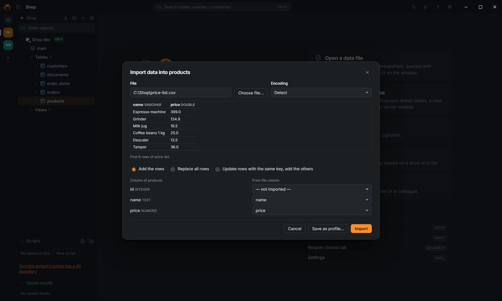

Importare ed esportare
Le azioni qui sotto sono nel menu del tasto destro del navigatore e nella palette dei comandi (Ctrl+K). L'elenco completo di formati e opzioni è in FEATURES.md.
Importare un file in una tabella

- Fai clic con il tasto destro sulla tabella nel navigatore, poi Dati › Importa i dati….
- Scegli il file: CSV, TSV, JSON, NDJSON, Parquet o Excel.
- Controlla l'anteprima e la mappatura delle colonne.
- Scegli Aggiungi le righe, Sostituisci tutte le righe oppure Aggiorna le righe con la stessa chiave, aggiungi le altre, poi fai clic su Importa. L'ultima richiede una chiave primaria sulla tabella e non è offerta su ClickHouse.
Importa i dati… è offerto sulle tabelle, non sulle viste. Per una nuova tabella, fai clic con il tasto destro sullo schema e scegli Importa i dati in una nuova tabella…: i tipi sono quelli che DuckDB ricava dal file, e non c'è scelta della modalità. Incolla un CSV come nuova tabella… (stesso menu) importa gli appunti.
L'import non è offerto su una connessione in sola lettura, su una che vieta la modifica dei dati, né sui database NoSQL.
Esportare le tabelle in un file
- Fai clic con il tasto destro su una tabella, o selezionane più di una, poi Dati › Esporta i dati…. Per tutte le tabelle di uno schema, fai clic con il tasto destro sullo schema e scegli Esporta tutte le tabelle….
- Scegli il Formato (CSV, JSON, NDJSON, Parquet, Excel, SQL
INSERT, Markdown, HTML o XML) e fai clic su Esporta in una cartella…: anche per una sola tabella l'app chiede una cartella, e scrive un file per tabella, con il nome della tabella. - Se vuoi, imposta Compressione (gzip o zstd; non per Parquet ed Excel, che sono già compressi) e Carica anche su… un bucket (S3, GCS, R2 o MinIO).
Quando esporti invece il risultato di una query (l'export della griglia dei risultati), la finestra chiede un solo file, e il caricamento può andare anche a un URL firmato (S3 o GCS).
Le celle CSV che un foglio di calcolo eseguirebbe come formula ricevono un ' iniziale, a meno che tu non disattivi Formule come testo, per i fogli di calcolo. Una connessione può vietare gli export (pagina Aspetto e sicurezza); l'azione allora non è offerta. Vedi Sicurezza.
Per portare fuori il risultato di una query, copialo dalla griglia come CSV, JSON, Markdown, HTML, SQL INSERT o un elenco IN.
Copiare una tabella o uno schema in un altro database
Fai clic con il tasto destro su una tabella e scegli Dati › Copia in un database… (ti permette di mappare le colonne), seleziona più tabelle di uno schema e scegli Dati › Copia le tabelle in un database…, oppure fai clic con il tasto destro sullo schema e scegli Copia lo schema in un database…. I tipi vengono mappati. La destinazione è una connessione SQL che non è in sola lettura e permette la modifica dei dati. Copiare più tabelle o uno schema vale per le sorgenti SQL; una collezione MongoDB o un tipo di chiave Redis si può copiare in un database SQL. Nessuna di queste azioni è offerta quando la connessione vieta gli export.
Eseguire un file SQL, o fare il dump in uno
Fai clic con il tasto destro su una connessione o un database e scegli Esegui file SQL…: esegue un file .sql (o .sql.gz, .sql.zst) di qualsiasi dimensione istruzione per istruzione, con avanzamento e Stop, per impostazione predefinita in una sola transazione di cui un errore fa il rollback. Dump in un file SQL… (su uno schema, o sulle tabelle sotto Dati) scrive in un solo file il DDL di uno schema o degli oggetti scelti, e se vuoi le loro righe.
Salvare un trasferimento per dopo
Ogni finestra di export, import e copia ha Salva come profilo…. Profili di trasferimento… (palette dei comandi) li esegue, rinomina, elimina e pianifica. La chiave segreta di un bucket non viene mai salvata nel file del profilo.
Interrogare un file di dati senza importarlo
Trascina un file CSV, JSON, Parquet o Excel sulla finestra, oppure fai clic su Apri un file di dati nella schermata di benvenuto: si apre come un database (ogni foglio Excel è una tabella). La prima volta, l'app propone di scaricare la libreria di DuckDB.
Importare le connessioni
Nella schermata di benvenuto, Importa le connessioni legge DBeaver, DataGrip e pgAdmin (e pg_service.conf); vengono lette anche le connessioni Db2 di DBeaver e DataGrip e gli URL jdbc:db2:. Esporta le connessioni scrive un file .platypusconn per un altro computer: vedi Progetti e condivisione.